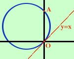

Equazione della circonferenza passante per due punti assegnati
e tangente ad una retta data
Trovare l'equazione della circonferenza passante per i punti
O(0,0) A(0,4)
e tangente alla retta
y = x
Prendo l'equazione generica della circonferenza
x2+
y2
+ ax + by + c = 0
-
Prima condizione: passaggio per
O=(0,0)
Sostituisco le coordinate nell'equazione della circonferenza
02+
02
+ a(0) + b(0) + c = 0
c = 0
-
Seconda condizione: passaggio per
A=(0,4)
Sostituisco le coordinate nell'equazione della circonferenza
02+
42
+ a(0) + b(4) + c = 0
16 + 4b + c = 0
4b + c = -16
-
Terza condizione: tangenza alla retta
y = x
Devo fare il sistema ed imporre che il delta sia uguale a zero
 x2+
y2
+ ax + by + c = 0
x2+
y2
+ ax + by + c = 0
y = x
sostituisco
x2+
(x)2
+ ax + b(x) + c = 0
y = x
calcolo l'equazione risolvente
x2+
x2
+ ax + bx + c = 0
2x2
+ x(a + b) + c = 0
pongo il delta uguale a zero
(a+b)2
- 4·2·c = 0
a2
+ b2 + 2ab
- 8c = 0
Le tre condizioni devono valere
contemporaneamente;
faccio il sistema
c = 0
4b + c = -16
a2
+ b2 + 2ab
- 8c = 0
Sostituisco c = 0 nella seconda e nella terza
c = 0
4b = -16
a2
+ b2 + 2ab = 0
c = 0
b = -4
a2
+ (-4)2 + 2a·(-4) = 0
c = 0
b = -4
a2
- 8a + 16 = 0

risolvo l'equazione
di secondo grado, ottengo due soluzioni coincidenti
c = 0
b = -4
a = 4
L'equazione cercata e'
x2+
y2
+ 4x - 4y = 0
|